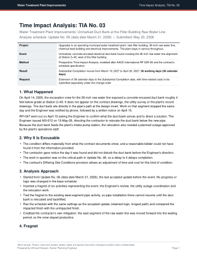

البرامج الزمنية المرجعية
إعداد البرامج المبدئية والمرجعية (IPS / NAS / BPS) انطلاقاً من المخططات والمواصفات وجدول القيم والمعالم الرئيسية والتقاويم وخطة التوريد.
المخرجات / ملفات XER وMPP · تقرير سردي · عروض المسار الحرج
برامج زمنية للمشاريع الإنشائية تصمد في الموقع وأمام المراجعة. برامج مرجعية على Primavera P6 وMS Project، وتحديثات شهرية، وقياس القيمة المكتسبة، ومراجعات DCMA، وتحليل الأثر الزمني، ومحاكاة رباعية الأبعاد لتسلسل التنفيذ، للمقاولين وفرق إدارة المشاريع.
عن بُعد أو بنظام مختلط / خبرة في مشاريع أمريكيةست خدمات، وصف كل منها بما يتسلمه فريق مشروعك فعلياً.
إعداد البرامج المبدئية والمرجعية (IPS / NAS / BPS) انطلاقاً من المخططات والمواصفات وجدول القيم والمعالم الرئيسية والتقاويم وخطة التوريد.
إدخال الفعليات أسبوعياً أو شهرياً، وتحديث التوقعات، ومتابعة المسار الحرج والفائض الزمني، والبرامج قصيرة المدى، وتقارير التقدم.
شبكات أنشطة جزئية (Fragnets) موثقة ومقارنات للبرنامج قبل الحدث وبعده، مرتبطة بطلبات الاستيضاح وأحداث الموقع والأعمال المتأثرة.
مراجعات مستقلة، وفحص DCMA ذو النقاط الأربع عشرة، وحصر الاستثناءات بأرقام الأنشطة، ومعالجة ملاحظات جهة المراجعة.
تحميل التكلفة على البرنامج حسب جدول القيم أو حسابات التحكم، ومتابعة PV وEV وAC، ومؤشري SPI وCPI، وتوقعات التكلفة عند الإنجاز (EAC)، ومخططات العمالة، ومنحنيات التدفق النقدي.
التحويل بين MS Project وPrimavera، ومطابقة أكواد الأنشطة، ولوحات Power BI، وعروض HTML تفاعلية.
اختر قطاعاً للاطلاع على تحديات الجدولة المعتادة فيه، والمخرجات، ونقاط التداخل التي يعالجها العمل.
لكل تاريخ في البرنامج أساس يستند إليه. هذه هي المراحل الست التي أتبعها في إعداد كل برنامج مرجعي.
مواصفات الجدولة، والمعالم الرئيسية، ومدد المراجعة، والتقاويم، وشروط الطقس، ومتطلبات الموارد.
هيكل تجزئة العمل (WBS) حسب المرحلة أو المبنى أو الطابق أو المنطقة أو النظام أو التخصص أو بند العطاء، بما يتوافق مع طريقة إطلاق الأعمال.
سلاسل التقديم والمراجعة والاعتماد والتصنيع والتوريد للمعدات والمواد ذات فترات التوريد الطويلة.
أنشطة سابقة ولاحقة يمكن الدفاع عنها، وأنشطة انتظار صريحة، وتسلسل تنفيذ واقعي في الموقع.
تحميل التكلفة والعمالة والفرق عند الحاجة، مع منحنيات تقدم مرتبطة بالأساس الصحيح للبرنامج.
فحص العلاقات المنطقية، ومراجعة المسار الأطول، والتقرير السردي للبرنامج المرجعي، وعروض التقارير، وسجل الرد على الملاحظات.
هل يحتاج مشروعك إلى برنامج مرجعي أو تحديث؟أرسل المواصفات أو برنامجك الزمني الحالي.
يعتمد تحليل الأثر الزمني على منطق البرنامج الزمني والمستندات المعاصرة للحدث، لا على مجرد قائمة بالأنشطة المتأخرة.
استخدام آخر تحديث معتمد للبرنامج يسبق الحدث مباشرة متى توفر.
تتبع تواريخ طلبات الاستيضاح والإخطارات والتعليمات والأعمال الهندسية والتقارير اليومية حتى جبهة العمل المتأثرة.
إنشاء أنشطة الحدث وربطها بالأعمال التي تتأثر بها فعلاً فقط.
توحيد تاريخ البيانات وحساب توقعات البرنامج قبل الأثر وبعده.
وصف تحرك المعالم الرئيسية، والتسلسل الحاكم، والتأخيرات المتزامنة، والمستندات التي لم تُستكمل بعد.
تقارير ما قبل الأثر وما بعده، ومقارنة المعالم الرئيسية، والتحفظات اللازمة للوصول إلى استنتاج فني منصف.
اطّلع على تقارير تحليل الأثرتقارن القيمة المكتسبة بين العمل المخطط والعمل المنجز وتكلفته الفعلية، وكلها من البرنامج الزمني نفسه المحمّل بالتكلفة. حرّك تاريخ البيانات لترى كيف تتطور المؤشرات في مشروع برج نموذجي، ولماذا لا يكفي توقع واحد للتكلفة النهائية.
القيم بالمليون جنيه. أرقام توضيحية من التقرير النموذجي، مستندة إلى خبرتي في البرامج المحمّلة بالتكلفة وتقارير SPI وCPI لمشروعين متعددي الاستخدامات في القاهرة الجديدة.
تقارير بالصيغة التي أصدرها في المشاريع الفعلية: تقارير سردية شهرية، والقيمة المكتسبة، وتحليل الأثر الزمني، ومراجعات DCMA، ومقارنات التحديثات.

التوقعات مقارنة بالعقد، والمسار الحرج، والبرنامج قصير المدى، والمخاطر، وخيارات الاستدراك.
افتح التقرير السردي
ظروف موقع مختلفة عن المتوقع، وشبكة جزئية، ومقارنة البرنامج قبل الأثر وبعده، وفحص للتأخير المتزامن.
افتح التحليل
نتائج المراجعتين 0 و1 جنباً إلى جنب، والملاحظات ومعالجة كل منها.
افتح المراجعة برج سكني / تاريخ البيانات 27 مارس 2026
برج سكني / تاريخ البيانات 27 مارس 2026واحد وعشرون نموذجاً رباعي الأبعاد، ثلاثة لكل قطاع، وكل نموذج مرتبط ببرنامجه المرجعي. حرّك تاريخ البيانات ليُبنى المشروع أمامك، مع إظهار المسار الحرج باللون الأحمر.
ثلاث خطوات من رسالتك الأولى حتى أول مُخرَج.
نوع المشروع، ومرحلته الحالية، والمعلم الرئيسي الأهم، والمشكلة المطلوب حلها. وتفيد مواصفات الجدولة الواردة في العقد إن كانت متاحة.
نحدد ما سأراجعه والملفات التي أحتاجها: ملفات XER أو MPP، والتقارير السردية، وسجلات التقدم.
قائمة مكتوبة بالمخرجات وصيغتها ومواعيدها، ويبدأ العمل فور موافقتك عليها.
الأتعاب والمدة تعتمد على حجم المشروع وجودة الملفات الحالية ومدى استعجال العمل، لذلك تُحدَّد لكل مهمة على حدة ولا تُدرج هنا.
أرسل مواصفات المشروع أو برنامجك الزمني الحالي أو وصفاً موجزاً لمشكلة الجدولة. والخطوة الأولى مراجعة مركزة للنطاق.
أخبرني بما تحتاجه، وسأرد عليك بالبريد الإلكتروني خلال يوم عمل واحد.